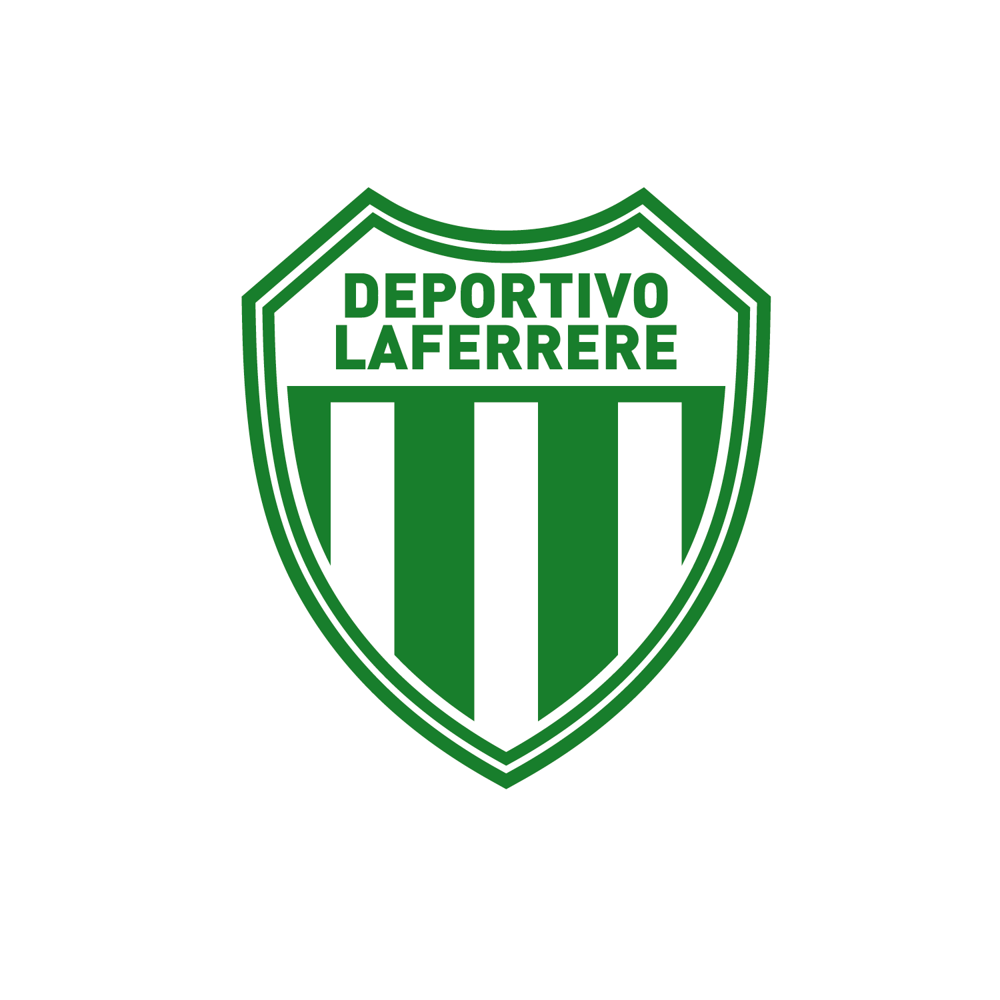

Club Social y Cultural Deportivo Laferrere




El flamante campeón sudamericano de peso superligero, Diego “El Guapo” Sánchez, fue ovacionado por el público en el estadio de Deportivo Laferrere. Durante el encuentro frente a Comunicaciones, la comisión directiva del club le rindió un merecido tributo al joven de 23 años, oriundo del Barrio Don Juan, quien exhibió con orgullo en el campo de juego el cinturón más importante de su carrera profesional (13-1-1, 4 KO). El púgil, formado en el Gimnasio Bordenave, se había coronado el pasado 3 de octubre en la Federación Argentina de Box. En aquella velada, planteó un combate estratégico que culminó en el quinto asalto, cuando fulminó al venezolano Leonardo Uzcátegui (27-11-3, 20 KO) por nocaut técnico gracias a un certero gancho de izquierda a la zona hepática. Consolidado en el séptimo puesto del ranking nacional de los ligeros, el boxeador matancero ya pone la mira en nuevos desafíos para su categoría.
Pagina hecha por Blanco Vicente, Colombo Agustin y Gestro Bruno


© 2026 Club Social y Cultural Deportivo Laferrere. Todos los derechos reservados.